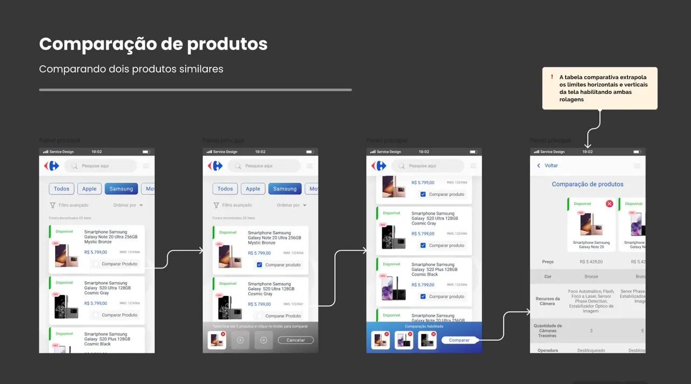
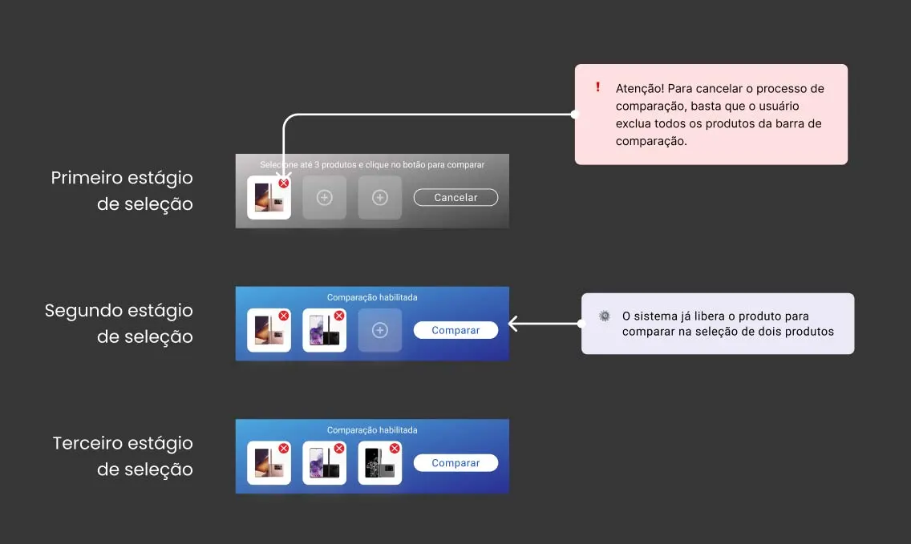
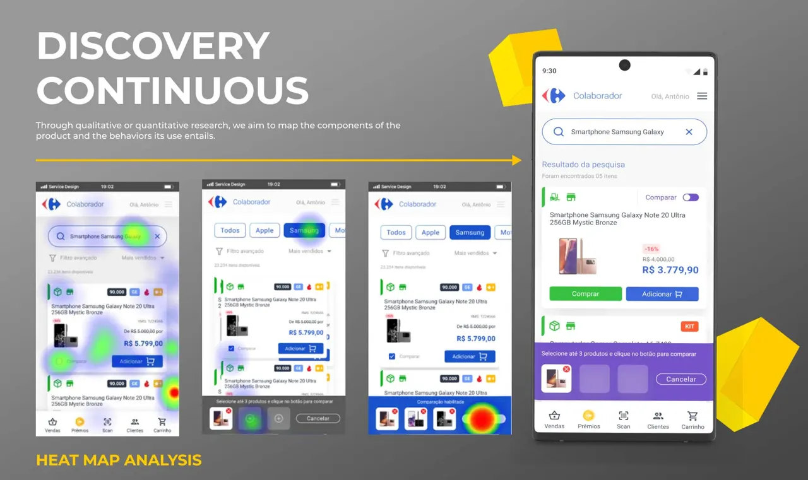

Carrefour SVA+
A comparison feature inside the SVA+ sales app that lets Carrefour associates put up to three products side by side, right in front of the customer.

Challenge
SVA+ lets sales associates run electronics consultations on the corporate smartphone, on the store floor.
The requirement: pick up to three products from the same category and read their specs in parallel columns, helping the customer decide at the moment of sale.

Solution
I mapped every product category and its relevant specs, then benchmarked how Amazon, Buscapé and Mercado Livre structure their comparison tools.
From a product page, the associate taps compare and the item docks in a fixed footer that follows the navigation. With two or more items, Compare opens a table with one column per product, scrollable in both directions.

Testing & impact
We tested the prototypes in Maze with 10 associates of different profiles, on the same phone they use to sell. Everyone finished on time; the footer and the remove button needed more emphasis, and we fixed both.
